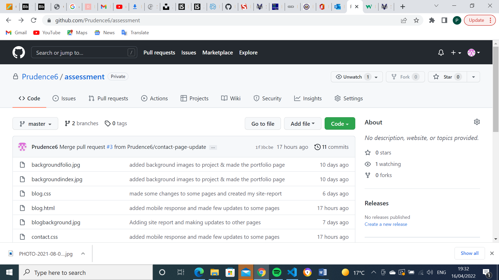
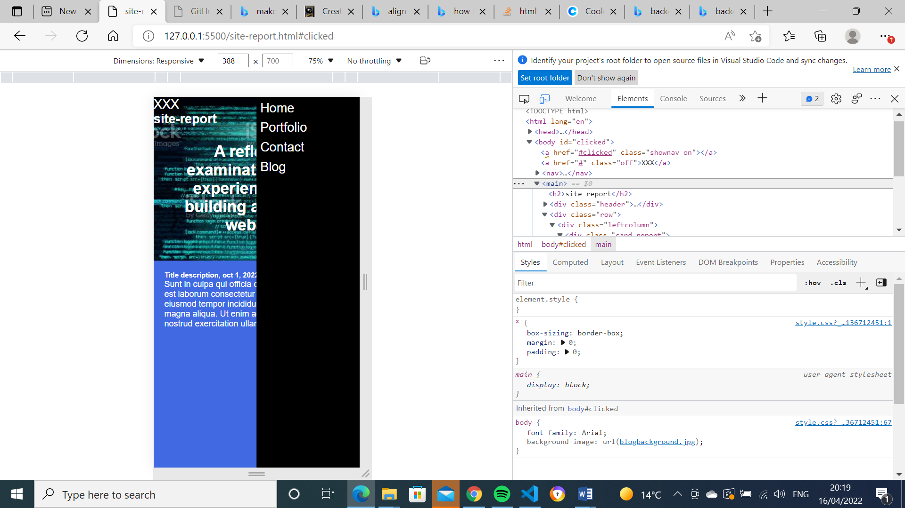
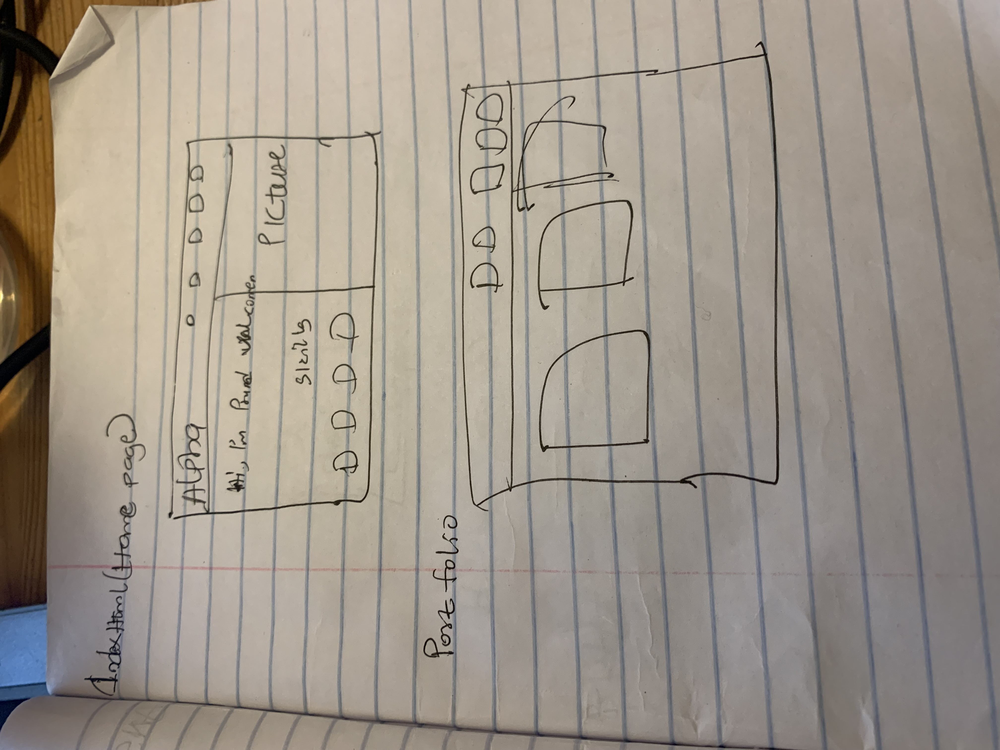
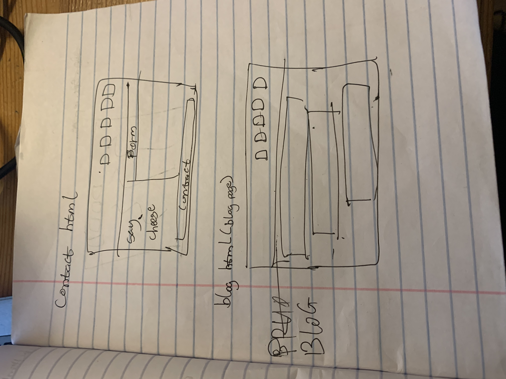
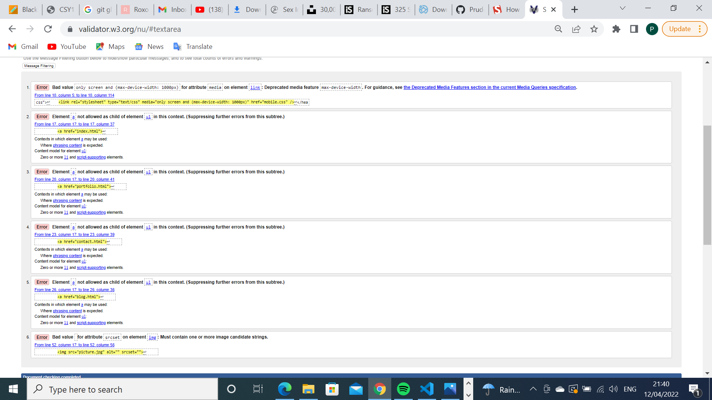
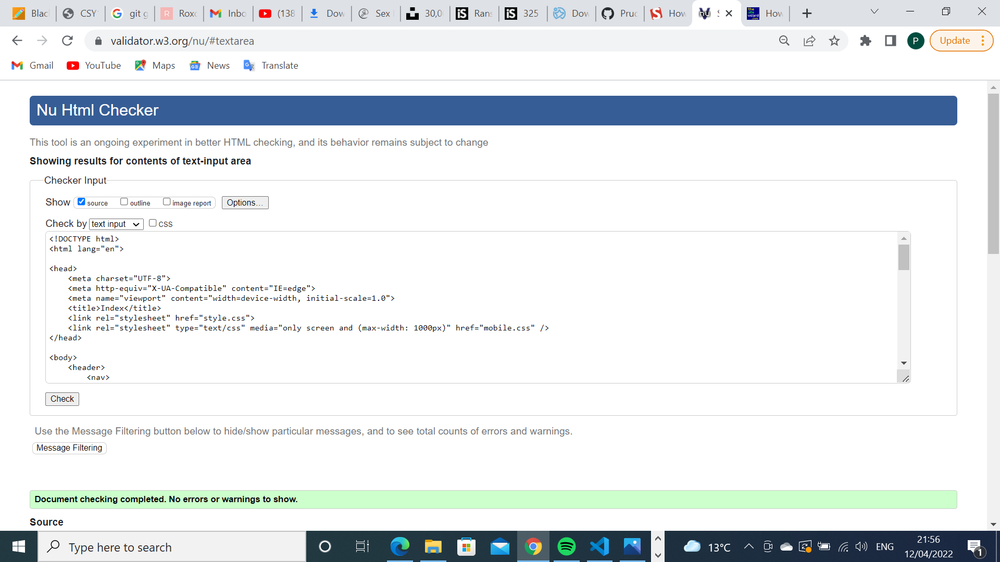

site-report
A reflective examination of my experience while building a portfolio website.
Introduction
In my time in this module I have seen progress in my skills like writing codes, developing a website etc. When building this website I faced some difficulties like making my columns in my index page but was still able to find solutions to them.
How I made my website
I was inspired by looking through a few websites(roxo-hugo.staticmania.com) that I had searched and now decided how I wanted mine to look, the kind of design it should have, the font that should be applied. This was my first time developing a website so I had to make sure I was doing it right. When designing my website I went through some background pages and saw the kind of images they used and decided that mine should also be professional and interesting to I went to one of the best sites(istockphoto.com) where I found the background image that I wanted for my pages.
Progress on the website
The picture below is my progress on the website and how far I have gone, I made some few changes to some pages like the design, style, colour and background image at the end of developing my website. However my design decisions all came from my head and was drawn down in a book before proceeding to developing the website so I know what I am about to do and you can also find pictures of the drawings below.
   Validation of my pages
I had so make some changes so some of my code after running it through validation and found some error in some of the code I had written. So below are the screenshots of the errors and screenshots that show my code validates.
 